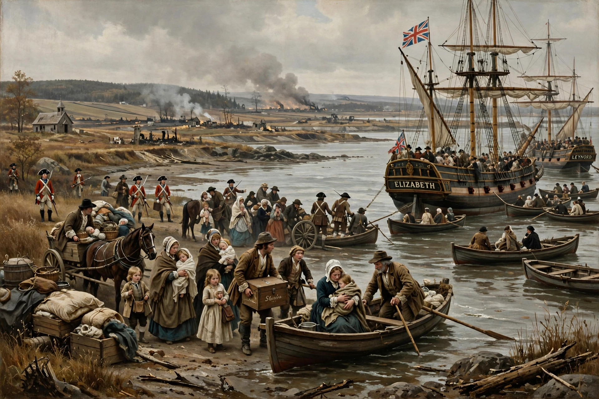

Expulsion of the Acadians
| Expulsion of the Acadians | |
|---|---|
| Date | 1755–1764 |
| Location | Acadia (present-day Nova Scotia, New Brunswick, Prince Edward Island) |
| Result | Over 11,500 Acadians deported; thousands died of disease, starvation, or shipwreck |

The Expulsion of the Acadians (French: le Grand Dérangement, "the Great Upheaval") was the forced removal by the British of the French-speaking Acadian population from the present-day Canadian Maritime provinces between 1755 and 1764, during the French and Indian War. More than 11,500 of the roughly 14,100 Acadians in the region were deported, their homes and farms burned, and their lands given to settlers from New England and later to British loyalists.
Background
Acadia had passed definitively to Britain under the Treaty of Utrecht in 1713, but the Acadians — descendants of French settlers who had farmed the dyked marshlands around the Bay of Fundy for generations — refused to swear an unconditional oath of allegiance that would oblige them to bear arms against France or their Mi'kmaq allies. As war loomed in 1755, Governor Charles Lawrence and the Nova Scotia Council decided to deport the population. The removal began at Grand-Pré, where Acadian men and boys were summoned to the church, imprisoned, and informed that their lands and goods were forfeited.
The deportations
Acadians were shipped to the British colonies along the Atlantic coast, to Louisiana (where their descendants became known as Cajuns), to England, and to France. Conditions were frequently lethal: ships were overcrowded, disease spread, and several transports sank with heavy loss of life, including vessels lost in the Atlantic in December 1758. Some Acadians escaped to Quebec or hid in the woods with Mi'kmaq assistance, and some resisted in a guerrilla campaign. The expulsion continued after the fall of New France until 1764, when Acadians were permitted to return — though most of their farms were occupied and returnees had to settle new lands.
Legacy
The expulsion became the defining trauma of Acadian identity. Henry Wadsworth Longfellow's poem Evangeline (1847) popularised the story worldwide. In 2003, a Royal Proclamation in Canada acknowledged the deportation and designated 28 July as a day of commemoration. The landscape of Grand-Pré is a UNESCO World Heritage Site. The episode is a frequently cited historical example of forced population transfer and collective exile.
See also
Population transfer · Exile · Forced displacement
Categories: Acadians · French and Indian War · Forced migration · 1755 in Canada